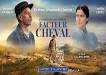

Soy Melinya. Me considero una persona curiosa y creativa, lo que me llevó a interesarme por el desarrollo web. Disfruto del proceso de transformar una idea en una página funcional. Además de la programación, me interesan el diseño, la ciberseguridad y la tecnología de vanguardia. Mi objetivo como desarrollador es construir sitios web que no solo funcionen bien, sino que también conecten con las personas de manera sencilla y eficiente.
haciendo énfasis en la accesibilidad digital
Habilidades
Estas son algunas de mis habilidades
Modelado y análisis de datos
Especialización en la estructuración, análisis e interpretación de datos científicos
Auditoría de Resiliencia en Entornos de Tecnología Operativa (OT)
Evaluación y fortalecimiento de la continuidad operativa de los sistemas de control industrial, aplicando protocolos de ciberseguridad que garantizan la alta disponibilidad de infraestructura estratégica
Desarrollo BackEnd
Experiencia en el diseño de arquitecturas web utilizando Node.js, Express y Pug
Hardening de Infraestructura
Configuración de servidores y estaciones de trabajo reduciendo la superficie de ataque
Diseño y optimización de bases de datos
Estructuración de bases de datos garantizando integridad y rápido acceso a la información
<-- Películas Favoritas -->
Mis 3 Películas Favoritas
Estas son mis 3 películas favoritas de todos los tiempos. Tengo la costumbre de verlas al menos una vez por año; si es en su versión extendida, mejor.
Hasta el último hombre
No matarás. En los inicios de la Segunda Guerra Mundial, Doss conoce a una joven enfermera, de quien se enamora, prometiéndose ambos una vida juntos. Pero al estallar el conflicto y al enlistarse su hermano en el ejército, decide colaborar como médico, anteponiendo una condición que impone su religión: no tocará un arma, más allá de lo peligroso que esto sea en ese entorno.
Le Palais Idéal du Facteur Cheval

Sur de Francia, año 1879. Ferdinand Cheval es un humilde cartero que sueña despierto con un mundo lleno de hermosos edificios que solo ha visto en las postales que reparte. Durante una de las rondas, conoce a la viuda Filomena y de su unión nace Alice. Cheval adora tanto a su hija que se propone construirle con sus propias manos un increíble palacio
In time
El hallazgo de una fórmula contra el envejecimiento trae consigo no sólo superpoblación, sino también la transformación del tiempo en moneda de cambio que permite sufragar tanto lujos como necesidades. Los ricos pueden vivir para siempre, pero los demás tendrán que negociar cada minuto de vida. Los pobres mueren jóvenes
Mis 3 Discos Favoritos
Mis gustos musicales son eclécticos. En lugar de mencionar discos favoritos, prefiero referirme a obras que son de mi agrado